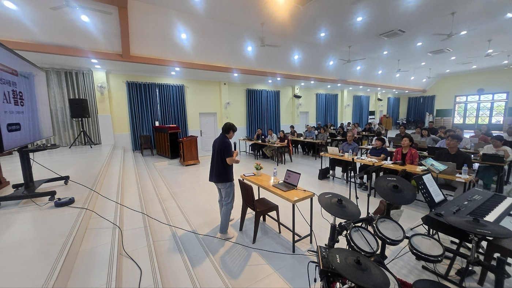
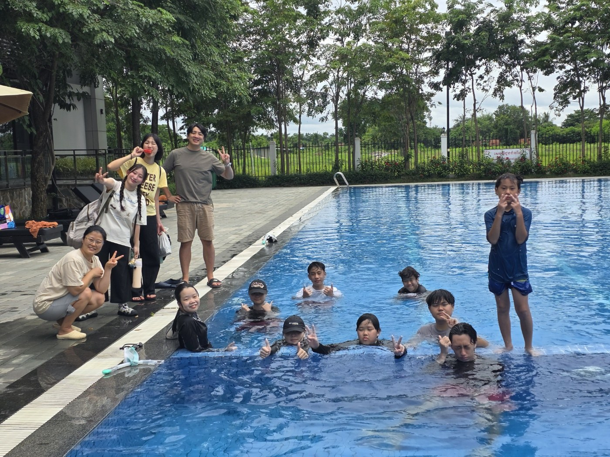
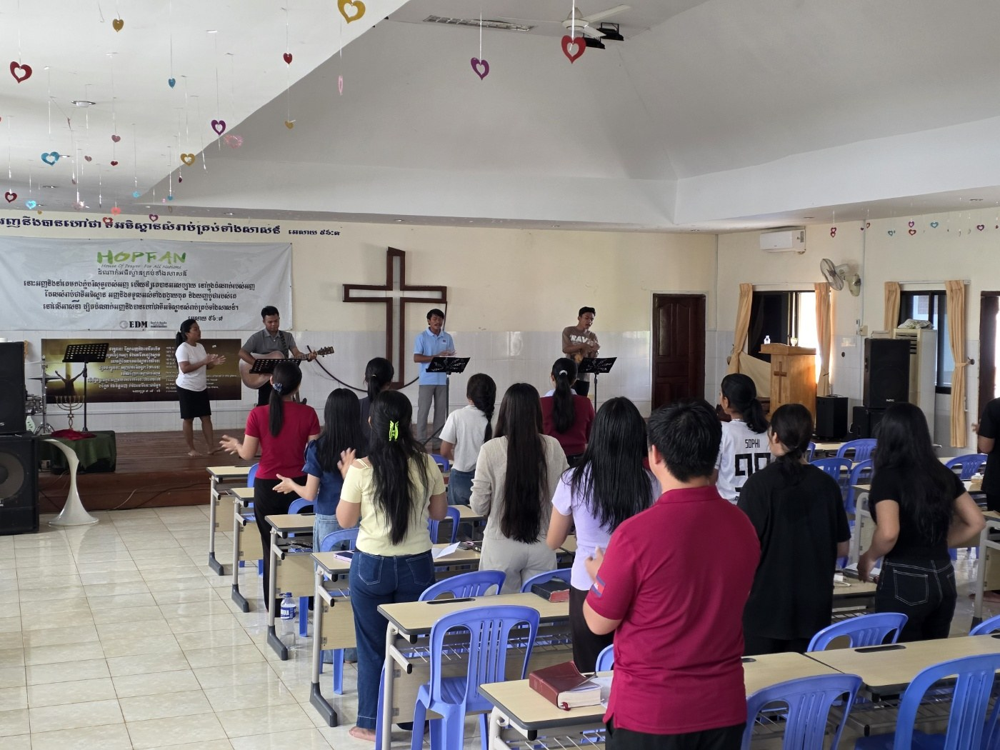
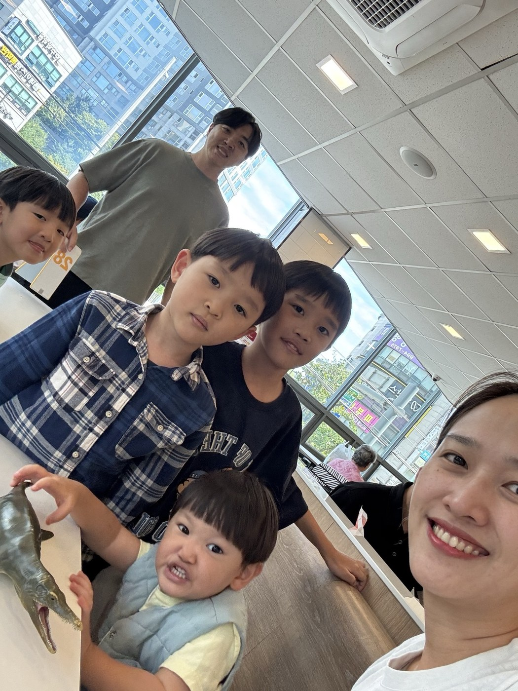
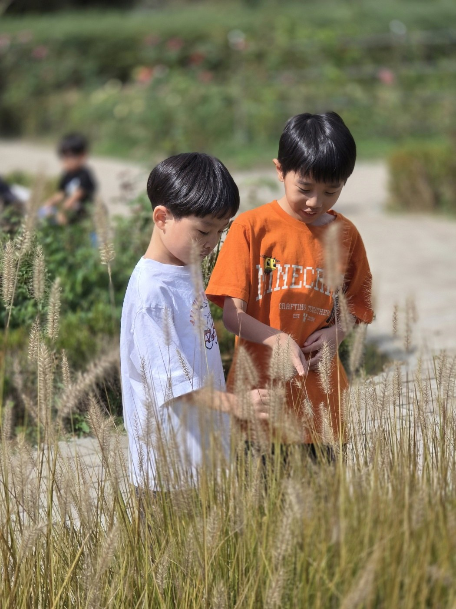

어느덧 한 해를 마무리하는 계절이 찾아왔습니다. 지금 저희 가정은 오랜만에 한국의 차가운 겨울 공기를 느끼며 일산의 저희 부모님 댁에서 이 편지를 드립니다. 지난 8월 이후 저희 가정을 인도하신 하나님의 은혜와 소식들을 동역자 여러분과 나누고자 합니다.
Ministry Update 01
바탐방에서의 섬김과 동역의 은혜
지난 9월에는 바탐방 지역 선교사님들을 대상으로 ‘사역을 위한 AI 특강’을 진행했습니다. 강의에 그치지 않고 선교사님들께서 현장에서 직접 연습하고 실제 사역에 활용하실 수 있도록 실습 핸드북을 제작해 함께 나누었는데, 사역에 필요한 도구를 나누며 서로 격려가 되는 시간이었습니다.
이어 프놈펜에서 열린 GMS 해피캄(Happy Cam) 지부 모임에 참석했습니다. 함께 사역하는 동역자들과 한자리에 모여 예배드리고 말씀을 나누며, 우리 자신을 돌아보고 서로를 격려하며 새 힘을 얻는 시간이었습니다.

바탐방 지역 선교사 AI 활용 특강프놈펜 GMS 해피캄 지부 모임
Ministry Update 02
새로운 부르심: HOPE 국제학교 교목(Chaplain)으로의 인도하심
바탐방의 사역들을 이어가며 아내와 함께 MK* 사역을 향한 하나님의 인도하심을 두고 깊이 기도하는 시간을 가졌습니다. 기도하며 길을 찾던 중, 아내가 우연히 프놈펜 HOPE 국제학교(HOPE International School) 홈페이지를 열어보게 되었고, 그곳에서 TCK와 MK* 학생들을 섬길 교목(Chaplain)을 구하고 있다는 소식을 알게 되었습니다. 학교에서는 지난 3월부터 6개월 넘게 교목을 찾고 있던 상황이었습니다. (*MK: Missionary Kids, 선교사 자녀 / *TCK: Third Culture Kids, 제3문화 아이들 — 부모를 따라 타문화권에서 성장하고 있는 아이들)
하나님의 인도하심일지 모른다는 마음으로 기도하며 지원했고, 총 4차에 걸친 면접이 진행되었습니다.
1차 면접 인사 담당 선생님 및 초등부·중고등부 교장 선생님
2차 면접 영유아·초등부 대표 선생님들
3차 면접 중고등부 대표 선생님들
4차 면접 학교 총괄 대표 선생님과의 온라인 면접
HOPE 국제학교는 20여 년 전 호주 선교사님들이 선교사 자녀들을 위해 설립한 학교로, 교사와 행정 스태프 전원 모두가 선교사로 헌신하고 있는 공동체입니다. 감사하게도 면접 과정을 거쳐 최종 합격을 통보받았고, 행정 담당 선교사님과 교장 선교사님들, 기존 교육 선교사님들과 한마음으로 MK와 TCK 아이들을 섬기게 되었습니다.
HOPE International School · Phnom Penh, Cambodia
프놈펜 HOPE 국제학교
God's Guidance 03
바탐방에서 프놈펜까지, 돌아보며 깨닫는 하나님의 인도하심
짧은 시간 안에 많은 일들이 빠르게 진행되었지만, 아내와 함께 지난 시간을 돌아보며 하나님께서 걸음마다 세밀하게 인도해 오셨음을 깨닫고 감사하게 되었습니다.
저희 가정이 처음 캄보디아에 왔을 때부터 하나님께서는 MK들과 청소년들을 향한 마음을 주셨습니다. 돌아보면 캄보디아에 처음 왔을 당시 바로 이 HOPE 국제학교에 교사로 지원해 1·2차 면접까지 보았던 적이 있었습니다. 그때는 하나님께서 그 길을 허락하지 않으시고 저희 가정을 먼저 바탐방(Battambang)으로 보내셨습니다.
왜 먼저 바탐방으로 인도하셨을까 돌아보니, 그곳에서 귀한 현지 사역자들과 좋은 동역자들을 만나게 하시려는 계획이 있으셨음을 알게 됩니다. 그들과 깊이 교제하며 함께 사역하고 다음세대를 향한 비전을 나누는 시간을 보낼 수 있었습니다. 그리고 이제 다시 프놈펜으로 돌아가 교목으로 섬기게 하시는 데에는 분명한 두 가지 이유가 있음을 보게 하셨습니다.
1. MK/TCK 사역의 지속적인 부르심
그동안 해왔던 MK 사역이 지난 시간의 경험으로만 남는 것이 아니라, 앞으로도 계속해서 이 아이들을 품고 양육하며 세워가도록 부르고 계심을 확인하게 하셨습니다.
2. 프놈펜 현지 청년(EDM 센터) 연결 통로
바탐방 EDM 센터에서 자란 청년들이 대학이나 취업으로 프놈펜에 간 뒤 신앙생활을 이어가지 못하는 경우가 많습니다. 바탐방 사역자들과 쌓은 신뢰를 바탕으로 프놈펜에서도 EDM 센터가 해왔던 것처럼 청년 모임을 세워갈 소망을 주셨습니다.
막혔던 길도, 돌아서 왔던 시간도 모두 하나님의 계획 안에 있었음을 고백합니다.

바탐방 동역자 및 다음세대 모임

바탐방 EDM 센터 예배
Family Update 04
아이들의 치료와 일산에서의 겨울나기
저희 가정은 지난 9월 27일, 아이들의 치과 및 병원 치료를 위해 네 아이(혁진, 혁준, 혁민, 혁선) 모두 함께 한국에 나왔습니다.
• 첫째 혁진이
시급했던 치과 치료를 잘 받고 있습니다.
• 둘째 혁준이 (갑상선 기능 저하증 정기 검진 및 약 처방)
치과 치료와 함께 정기 피검사 및 호르몬 약(신지로이드) 처방을 받았습니다. 그동안은 어려서 약 용량 때문에 알약을 가루로 갈아 적은 양을 먹여야 했는데, 감사하게도 이제는 많이 커서 약 반 알 용량을 편하게 먹을 수 있게 되었습니다. 그럼에도 앞으로는 약 없이도 갑상선 호르몬이 잘 분비될 수 있도록 기도를 부탁드립니다.
• 셋째 혁민이 (구순구개열 2차 수술 전 상악 교정)
구순구개열로 태어난 혁민이는 내년(혹은 내후년)에 골반뼈를 일부 채취해 잇몸의 빈 공간에 이식하는 2차 수술을 앞두고 있습니다. 구개열로 인해 상악이 뒤로 밀려 주걱턱이 되는 현상을 막고 본 수술을 준비하기 위해, 현재 상악을 앞으로 당겨주는 수술 전 교정 치료를 받고 있습니다.
최근에는 오랜만에 마주한 한국의 추위에 네 아이(혁진, 혁준, 혁민, 혁선)가 다 같이 감기에 걸려, 현재 머물고 있는 일산 저희 부모님 댁에서 거의 2주째 외출을 자제하며 지내고 있습니다. 감사하게도 지금은 아이들 모두 많이 회복되었습니다. 남은 3주간의 한국 일정을 건강하게 잘 마무리하고 돌아갈 수 있도록 기도를 부탁드립니다.
상악 교정 장치를 착용한 셋째 혁민이네 형제 (혁진, 혁준, 혁민, 혁선)
이번 시간들을 지나며 저희 가정은 하나님의 선하신 인도하심을 다시금 깊이 경험하고 있습니다. 무엇보다 많은 교회와 성도님들, 동역자분들께서 기도로 함께해 주시기에 저희 가정이 이 사역의 길을 걸어갈 수 있음을 고백합니다.
저희 역시 기도의 자리마다 동역자 한 분 한 분의 이름을 부르며 함께 기도하고 있습니다. 하나님께서 동역자 여러분들의 기도제목 가운데 선하심으로 응답하시고 인도하여 주실 줄 믿습니다. 늘 기도로 함께해 주시는 모든 분들을 예수 그리스도의 이름으로 사랑하고 축복합니다.
🙏 함께 기도해 주세요 (Prayer Requests)
1. 아이들의 치료와 가족의 건강을 위해
첫째 혁진이의 치과 치료와 둘째 혁준이가 약 없이도 갑상선 호르몬이 정상적으로 잘 분비되도록, 그리고 구순구개열 2차 수술 전 상악 교정 치료를 받고 있는 셋째 혁민이의 모든 치료 과정이 순조롭게 진행되게 하시고, 네 아이(혁진, 혁준, 혁민, 혁선) 모두 감기에서 완전히 회복되어 남은 3주간의 한국 일정을 건강하게 마친 뒤 캄보디아로 잘 돌아갈 수 있도록 기도해 주세요.
2. 프놈펜 이주와 정착의 모든 필요가 채워지도록
바탐방에서 프놈펜으로 다시 이사해야 하는 상황 가운데, 좋은 학교와 동역자들을 허락하신 하나님께서 저희 가정이 머물 거처를 예비해 주시고, 이사의 모든 과정과 필요한 재정이 채워질 수 있도록 기도해 주세요.
3. HOPE 국제학교 교목 사역과 현지 청년 사역을 위해
처음으로 맡게 되는 교목(Chaplain) 사역을 잘 감당할 수 있도록 지혜와 능력을 주시기를, 또한 MK/TCK 아이들을 말씀과 사랑으로 잘 섬길 뿐 아니라 프놈펜으로 올라온 귀한 현지 청년들을 위한 사역에도 아름답게 쓰임 받을 수 있도록 기도해 주세요.
Family & Bonus Moments
📸 가족과 네 형제의 한국 일상

가족사진화면 속 형들을 바라보는 막내 혁선이

가을 산책 중인 아이들공원에서 뛰어노는 아이들
💌 선교 후원 안내 (Mission Support)
KEB 하나은행GMS (기부금 영수증 발급)
920-982395-569
예금주: 권창현/천소희
KB 국민은행일반 후원
536802-04-069469
예금주: 권창현
WISE (해외 후원자)한국 외 지역(비한국) 후원자 안내
Account: 105275145015445
계좌명 (Name)Chang Hyun Kwon
계좌 종류 (Account type)Deposit
미국 은행 송금 시 — Routing (wire/ACH)084009519
미국 외 지역 송금 시 — Swift/BICTRWIUS35XXX
주소 (Address)
Wise US Inc, 108 W 13th St, Wilmington, DE, 19801, United States
We hope you’re doing well as another year comes to a close. We’re writing this update from our parents’ home in Ilsan, Korea, where our family is experiencing cold winter weather for the first time in quite a while. A lot has happened since August, and we’d love to share how God has been leading our family over these past few months.
Ministry Update 01
Serving & Connecting in Battambang
Back in September, I had the opportunity to lead an “AI for Ministry” workshop for fellow missionaries serving in the Battambang area. Rather than just giving a lecture, I put together a hands-on workbook so everyone could practice and use these tools in their day-to-day ministry. It was a great time of learning and encouraging one another.
Soon after, we traveled to Phnom Penh for our GMS “Happy Cam” regional gathering. Getting together with fellow missionaries serving across Cambodia to worship, share the Word, and encourage one another was a very refreshing and meaningful time for us.
AI for Ministry Workshop in BattambangGMS Happy Cam Regional Gathering in Phnom Penh
Ministry Update 02
A New Chapter: Serving as Chaplain at HOPE International School
As we continued our ministries in Battambang, my wife and I spent a lot of time praying about how God wanted to lead us next in MK* ministry. While we were praying, my wife happened to check the website of HOPE International School in Phnom Penh and saw an opening for a School Chaplain to serve their MK and TCK* students. The position had been open since March—the school had been praying and looking for a chaplain for over six months. (*MK: Missionary Kids / *TCK: Third Culture Kids — children growing up in a culture outside their parents’ home country)
Praying that this might be God’s leading, I applied, and we went through four interviews:
1st Interview HR Coordinator and the Primary & Secondary Principals
2nd Interview Early Years & Elementary Team Leaders
3rd Interview Middle & High School Team Leaders
4th Interview Final online interview with the School Director
HOPE International School was founded over 20 years ago by Australian missionaries to serve missionary families, and every teacher and staff member serves there as a missionary. Thankfully, I was offered the position! From the administrative missionary and the Principals to the returning missionary teachers, everyone welcomed us with a shared heart and vision for serving MK and TCK students.
HOPE International School · Phnom Penh, Cambodia
HOPE International School, Phnom Penh
God's Guidance 03
From Battambang to Phnom Penh: Seeing How God Led Us
A lot happened in a short amount of time, but as my wife and I looked back over the past few years, we were grateful to see how carefully God had guided each step.
Ever since we first arrived in Cambodia, God has given us a heart for MKs and youth. Looking back, when we first moved to Cambodia years ago, we actually applied to teach at HOPE International School and went through the 1st and 2nd interviews. At that time, God didn’t open that door and instead sent our family to Battambang first.
Now we can see why He led us to Battambang first. That season allowed us to meet wonderful local Cambodian pastors, youth leaders, and coworkers. We were able to build close relationships, serve side by side, and share a vision for the next generation. As God brings us back to Phnom Penh to serve as Chaplain at HOPE, He has shown us two clear reasons for this transition:
1. Continuing Our Calling to MKs & TCKs
The years we spent serving MKs weren’t just a past experience—God is calling us to keep walking alongside MK and TCK students and discipling them in their everyday lives.
2. Connecting Battambang Youth in Phnom Penh
Many Cambodian students who grow up at the EDM Center in Battambang move to Phnom Penh for college or work, and often struggle to stay connected to a church. Building on the trust we formed with leaders in Battambang, we hope to start a youth gathering in Phnom Penh—just as the EDM Center has been doing—to help them continue in their faith.
Both the closed doors and the detours were all part of God’s plan.
Youth & Coworkers in BattambangWorship at the EDM Center in Battambang
Family Update 04
Kids’ Medical Care & Winter in Ilsan
On September 27, our whole family—all four boys (Hyukjin, Hyukjun, Hyukmin, and Hyukseon)—flew to Korea for dental and medical treatments.
• Hyukjin (Oldest)
Has been getting caught up on some much-needed dental work.
• Hyukjun (Second — Thyroid Checkup & Medication)
Along with dental work, he had his routine bloodwork and prescription checkup for hypothyroidism. Until now, because he was young and needed a smaller dosage, we had to get his thyroid medication (Synthroid) ground into powder packets to give him the right amount. Thankfully, now that he has grown so much, he is able to take a half-tablet dose much more easily! Even so, please pray with us that his body will be able to produce thyroid hormones well on its own without needing medication.
• Hyukmin (Third — Pre-Surgery Orthodontics)
Born with a cleft lip and palate, Hyukmin is preparing for his second bone-graft surgery in the next year or two, where doctors will take a small piece of bone from his hip to fill the gap in his upper gum. Because a cleft palate causes the upper jaw to sit further back over time (leading to an underbite), he is currently receiving pre-surgery orthodontic treatment to gradually pull his upper jaw forward.
With the sudden cold weather here in Korea, all four boys (Hyukjin, Hyukjun, Hyukmin, and Hyukseon) caught colds at the same time, so we’ve been staying indoors at our parents’ home in Ilsan for almost two weeks now. Thankfully, the boys are doing much better. Please pray that we can finish our remaining three weeks in Korea in good health before heading back to Cambodia.
Hyukmin Wearing His Orthodontic HeadgearFour Brothers (Hyukjin, Hyukjun, Hyukmin, Hyukseon)
Walking through this season, our family is once again grateful for God’s faithful guidance. Above all, we know we are able to keep walking this path because so many churches, friends, and partners faithfully support us in prayer.
Whenever we pray, we lift up your names before the Lord one by one. We trust that God, in His goodness, will faithfully answer your prayers and guide your lives. Thank you for standing with our family—we love and bless you in the name of Jesus!
🙏 Prayer Requests
1. Medical Treatments & Our Family’s Health
Pray for Hyukjin’s dental work, for Hyukjun’s body to produce thyroid hormones well on its own without medication, and for Hyukmin’s pre-surgery orthodontic care to go smoothly. Pray also that all four boys (Hyukjin, Hyukjun, Hyukmin, and Hyukseon) recover completely from their colds, and that we finish our remaining three weeks in Korea in good health before returning to Cambodia.
2. Moving to Phnom Penh & Finding a Home
As we prepare to move from Battambang back to Phnom Penh, pray that God—who provided this school and team—will also prepare a home for our family to live in, guide the entire moving process, and provide for all the financial needs.
3. HOPE International School Chaplaincy & Local Youth Ministry
Pray for wisdom and strength as I step into the role of School Chaplain for the first time, so that I can serve the MK and TCK students well with God’s Word and love—and that our family will also be used wonderfully in ministry to the precious local Cambodian young adults who have moved to Phnom Penh.
Family & Bonus Moments
📸 Family & Everyday Moments in Korea
Family PhotoHyukseon Looking at His Brothers on the ScreenFall Walk in KoreaPlaying at the Park
💌 Mission Support & Giving
WISE (U.S. & International)For Supporters Outside Korea
Account No: 105275145015445
Account NameChang Hyun Kwon
Account TypeDeposit
From U.S. Banks — Routing (wire/ACH)084009519
Outside the U.S. — Swift/BICTRWIUS35XXX
Bank Address
Wise US Inc, 108 W 13th St, Wilmington, DE, 19801, United States